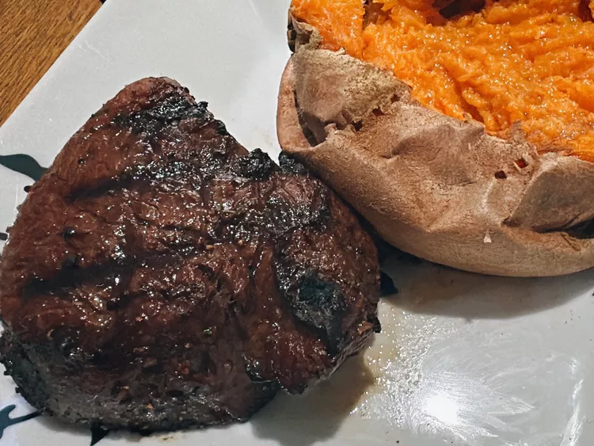

Coffee-Rubbed Steak

Description
This coffee-rubbed steak uses coffee grounds in a rub to create a deep,
dark crust when seared, which enhances a steak's natural umami.
Ingredients
- 1/4 cup finely ground coffee
- 2 tablespoons dark brown sugar
- 1 1/2 teaspoons chili powder
- 2 teaspoons garlic powder
- 2 teaspoons Hungarian sweet and spicy paprika
- 1 1/2 teaspoons salt
- 1/4 teaspoon cayenne pepper
- 4 filet mignon steaks
Steps
-
Combine coffee, brown sugar, chili powder, garlic powder, paprika, salt, and cayenne pepper in a small bowl.
Set aside. Let steak come to room temperature.
-
Preheat an outdoor grill to medium-high.
Pat steak dry with paper towels and season both sides generously with coffee rub.
-
Place steaks on the preheated grill. Close the lid and cook for 4 to 5 minutes.
Flip steaks and cook until an instant read thermometer inserted near the center reads 130 to 135 degrees F (54 to 57 degrees C), 4 to 5 minutes more, for medium-rare.
-
Remove steak from the grill, tent with foil, and let it rest for a few minutes to allow juices to redistribute.